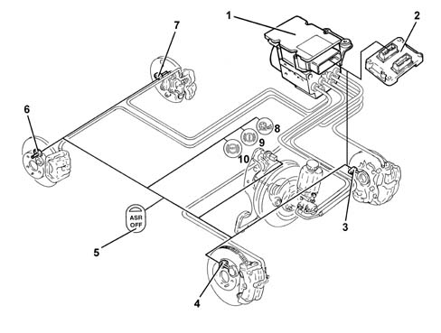

Introduction A.S.R. CONTROL/REGULATION DEVICES
- Path
- Descriptions > 33 BRAKES > 3350 TRACTION CONTROL > 3350A A.S.R. CONTROL/REGULATION DEVICES > Introduction A.S.R. CONTROL/REGULATION DEVICES
- Kind
- system description
- Applies to
- all engines; all production periods
- Interactive page
- https://sloeber94.github.io/elrnDB-lThss/en/#/151979
Applies to: all engines; all production periods

- 1 - ABS/ASR control unit
- 2 - Engine management control unit
- 3 - Left front sensor
- 4 - Right front sensor
- 5 - ASR off button
- 6 - Right rear sensor
- 7 - Left rear sensor
- 8 - ASR warning light
- 9 - EBD failure (9 and 10 on simultaneously)
- 10 - ABS warning light